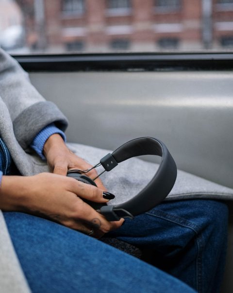
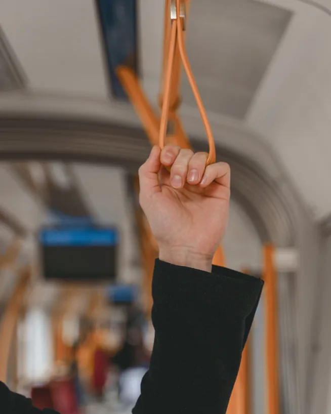
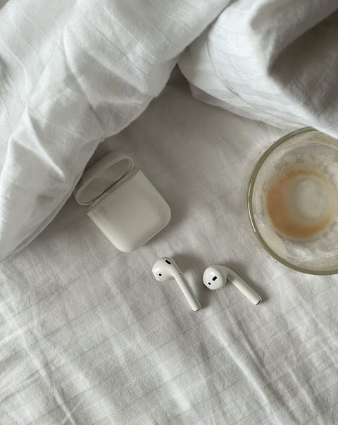

Beantwoord 5 korte vragen en ontdek welk protocol bij jou past.
Het staat al maanden aan. Je borst. Je kaken. Je hoofd om 3 uur 's nachts.

En iedereen zegt hetzelfde. "Rust wat uit." "Het gaat wel over." "Doe eens rustig aan."
Alsof je dat niet al geprobeerd hebt.
Je hebt geen tips nodig. Geen "even eruit" advies. En geen verwijzing naar een wachtlijst van drie maanden bij de GGZ.
Je hebt iets nodig dat werkt. Vanavond.
Geen therapeut, geen programma, geen abonnement. Niks om je voor aan te melden, niks om af te maken.
Zonder account. Zonder betaling.
Als het lichaam het alarm bewaart — in de adem, in de spieren, in het hoofd dat niet stopt — dan is het lichaam ook waar het weer leert stoppen.
"Met Noodprotocol hoefde ik niets uit te leggen. Niemand hoefde iets van mij te weten. Ik kon gewoon op mijn bed gaan liggen en luisteren."Femke, 31
Het Noodprotocol zijn drie stemopnames. Samen ± 21 minuten. Je drukt op play — een stem neemt het over.


Noodstop
Luister 22 seconden
Voor wanneer het ineens allemaal te veel wordt.
Langer uitademen dan inademen, volgens de 4-7-8-methode — dat is het signaal waarmee je lichaam zichzelf gerust stelt.
"Adem in. Twee, drie, vier."
Noodstop
Luister 22 seconden
Voor wanneer je weet dat je veilig bent, maar je lijf nog aan staat.
Je hoeft je gedachten niet te stoppen — dat lukt toch niet. Je zintuigen wel. Dezelfde verankering die traumatherapeuten gebruiken om iemand terug te halen naar het hier en nu.
"De gedachten die aan het racen waren, ze kunnen er nog zijn. Maar nu ben jij er ook."
Voor wanneer de dag voorbij is, maar je lijf nog niet loslaat.
Spier voor spier, van je hoofd tot je voeten — tot je lichaam voelt dat het los mag.
"Je kaken. De meeste mensen dragen hier de hele dag spanning zonder het te weten."
Onderzoek naar de technieken, niet naar Gewoon Even zelf.
223studies
Langzaam ademen verhoogt de activiteit van de nervus vagus.
28dagen
5 minuten per dag: betere stemming dan mindfulness.
27studies
Ontspanning verlaagt angstklachten: gemiddeld tot groot effect.
Laborde e.a. 2022 · Balban e.a. 2023 (Stanford) · Manzoni e.a. 2008.
| Noodprotocol | Psycholoog | Meditatie-app | |
|---|---|---|---|
| Vanavond beginnen | |||
| Eenmalig betalen | |||
| Zonder verwijzing | |||
| Voor het moment zelf | |||
| Persoonlijke behandeling |
Wachttijd ggz 2025: gemiddeld 14 weken tot de intake, 24 weken tot de behandeling (Radar en MIND, op NZa-gegevens). Veel meditatie-apps hebben een abonnement.
Je bent moe, maar écht ontspannen lukt niet.
Je lichaam blijft gespannen, ook als alles "goed" is.
Je hoofd versnelt vooral 's avonds.
Je schrikt sneller dan je zou willen.
Je weet rationeel dat het goed komt — je lijf lijkt het niet te weten.
60 dagen geld terug
"Mijn hoofd maakt overuren. Zelfs als ik probeer te ontspannen, ben ik ondertussen mijn boodschappenlijst, mijn werk en een gesprek van drie dagen geleden aan het analyseren. Daarom haakte ik bij meditatie meestal na twee minuten af. Bij Reset hoefde ik mijn gedachten helemaal niet stil te maken. Ik kreeg gewoon iets anders om mijn aandacht aan te geven. Mijn voeten, mijn handen, geluiden om me heen… Voor het eerst voelde het niet alsof ik moest vechten tegen mijn eigen hoofd."
"Ik heb een telefoon vol apps waar ik ooit enthousiast aan begon en na een week nooit meer naar keek. Ik wilde echt niet nóg iets waar ik dagelijks aan moest denken. Dat vond ik juist fijn aan Noodprotocol: ik hoefde niets te installeren, geen account aan te maken en nergens aan vast te zitten. Ik pak mijn telefoon, luister wanneer ik het nodig heb en daarna ben ik klaar. Dat past veel beter bij mijn leven."
"Mijn moeilijkste momenten zijn 's nachts. Iedereen slaapt en ik lig wakker met een lijf dat blijkbaar denkt dat er iets verschrikkelijks staat te gebeuren. De eerste keer dat ik Noodprotocol gebruikte was rond drie uur 's nachts. Ik hoefde niemand te bellen, geen scherm te bekijken en geen ingewikkelde oefening te doen. Alleen mijn oortjes in en luisteren. Ik viel niet magisch meteen in slaap, maar de paniek uit mijn lichaam zakte genoeg om weer te kunnen liggen."
"Ik ben niet iemand die normaal gesproken naar meditatie-audio's luistert. Ik vond het eerlijk gezegd allemaal een beetje zweverig klinken. Maar de stem is juist heel nuchter. Geen manifesteren, geen 'denk positief', geen spirituele verhalen. Gewoon: doe dit, voel dat, adem hierheen. Ik merkte vooral dat ik niet hoefde te geloven dat het zou werken. Ik hoefde het alleen maar te volgen."
Je betaalt veilig.
Met iDEAL of kaart.
Je krijgt direct een e-mail.
Met een knop naar je drie audio's.
Je luistert wanneer je lijf in alarm staat.
Zo vaak je wilt.
Direct beschikbaar
Eén keer naar de psycholoog? Eerst je eigen risico. €385 — elk jaar opnieuw vastgesteld door de overheid. En dan begint de wachtlijst pas.
Dit? €17. Vanavond nog.
"Mijn huisarts noemde het stress. … Ik wilde iets kunnen doen toen het gebeurde."Ingrid, 52Ja, ik doe dit nu — €17
Veilig betalen via Stripe
Werkt het niet voor je? Dan krijg je je geld terug. We zijn ervan overtuigd dat het Noodprotocol je verlichting geeft — daarom 60 dagen garantie, zonder vragen.
Waarom het steeds terugkomt — dat leer je wanneer je er klaar voor bent.
Geen medisch advies en geen vervanging voor professionele behandeling.
Nee. Je betaalt één keer €17.
Nee. Je krijgt een e-mail met een link en luistert in je browser.
Samen ± 21 minuten: de Noodstop duurt 7 minuten, de Reset ruim 4 en de Landing ruim 9.
Nee. Het Noodprotocol is geen medisch advies en vervangt geen behandeling. Heb je acuut hulp nodig, bel 112. Voor hulp bij gedachten aan zelfdoding: 113 Zelfmoordpreventie, 113.nl.
Nee. Luister niet tijdens het fietsen of autorijden. De audio's zijn voor momenten waarop je veilig kunt zitten, staan of liggen.
Vul je e-mailadres in om verder te gaan naar je persoonlijke protocol.
We sturen je alleen relevante informatie over je protocol. Geen spam, je kunt je altijd uitschrijven.
Na je Noodprotocol
Het Noodprotocol helpt je in het moment zelf. Dit is het vervolg: zeven dagen om te leren waarom het steeds terugkomt.
Eén keer betalen. Geen abonnement. De audio's blijven van jou.
Luister eerst. Eén minuut uit Dag 1.
Je doet al maanden gewoon. Je werkt, je zorgt, je zegt dat het goed gaat. Niemand ziet wat dat je kost. Misschien jij zelf ook niet meer.
Je hebt ademhaling geprobeerd. Apps. Misschien een podcast om 3 uur 's nachts. Ze werkten even. En dan weer niet.
Er is een naam voor waar je in leeft: de alarmstand. Een systeem dat nooit heeft leren stoppen. Je merkt het in de ochtend die zwaarder begint dan nodig. In het geduld dat al op is voordat iemand iets van je vraagt.
Een systeem dat nooit heeft leren stoppen, leert dat niet tijdens een paniekaanval. Dat leer je op dagen waarop er niets aan de hand is. Vandaag is zo'n dag.
Wat je een renster in de Tour ziet doen, heeft ze maanden eerder geleerd, op dagen waarop niemand keek. Daar leert het lichaam wat het later moet kunnen. Met jouw systeem kan dat net zo werken.
Het Protocol van 7 Dagen geeft je die dagen.
Zeven dagen. Tussen 8 en 13 minuten per dag.
Onderzoek naar gestructureerde ademhalingsoefeningen: Balban et al., Cell Reports Medicine, 2023 (Stanford University).
“Ik lag 's avonds vaak nog van alles terug te halen van mijn werk. Gesprekken, dingen die ik anders had willen zeggen. Door de oefeningen begon ik eerder te merken wanneer ik daarin vastzat. Soms lukte het me om het weer los te laten. Dat maakte mijn avonden net wat rustiger.”
Je hoeft niets uit te leggen. Je hoeft niemand te vertellen dat het goed gaat. Geen abonnement. Niemand die iets van je vraagt.
Ik wil beginnen€67€37
Dit aanbod zie je omdat je het Noodprotocol hebt.
Je geeft iedereen om je heen tijd. Zeven dagen lang is er elke dag tijd voor jou.
“Ik dacht eerst: waar ga ik dit nu weer tussen proppen? Maar één audio per dag was overzichtelijk. Ik hoefde niet zelf te bedenken wat ik moest doen en kon het gewoon op een moment doen dat mij uitkwam. Daardoor hield ik het makkelijker vol dan ik vooraf had verwacht.”
Namen op verzoek gewijzigd.
Dit is voor mij — €37Doe de zeven dagen. Voelt het niet als iets voor jou? Dan krijg je je geld terug. Zo kun je het rustig proberen: 60 dagen garantie.
Veilig betalen via Stripe
Geen medisch advies en geen vervanging voor professionele behandeling.
Bij een paniekaanval heb je iets nodig dat je al in je hand hebt, vóórdat je hoofd dichtklapt.
De Crisiskaart is precies dat: je noodplan op papier, klaar voor de eerste 90 seconden.
De 5-4-3-2-1-grondingstechniek wordt breed toegepast binnen cognitieve gedragstherapie (CGT) om acute paniek te onderbreken.
Print het uit, bewaar het op je telefoon, of stop het in je portemonnee. Eén keer instellen, altijd binnen bereik.
Je ontvangt binnen enkele minuten een email met toegang. Check ook je spam.
Tip: download de audio nu en zet hem op je startscherm. Zodat je hem hebt wanneer je hem nodig hebt.
Direct naar mijn Noodprotocol →De dijk hoeft niet te breken.
Je hebt nu een sluissysteem.
— Gewoon Even
Hieronder vind je je 3 protocollen. Je kunt ze hier beluisteren of downloaden naar je telefoon.
Tip: download de audio's en zet ze op je startscherm. Zodat je ze hebt wanneer je ze nodig hebt.
De grond houdt je vast. Altijd al.
7 audio's, 7 dagen. Luister ze in volgorde, één per dag. Elke dag bouwt voort op de vorige.
Tip: download alle audio's en maak een afspeellijst op je telefoon in de juiste volgorde.
↓ Download je dagboek (PDF)De grond houdt je vast. Altijd al.
Download het PDF-bestand, print het uit, of bewaar het op je telefoon. Voor als je hoofd te vol is om na te denken.
De grond houdt je vast. Altijd al.
Dit duurt 20 seconden en zegt iets over hoe je zenuwstelsel 's nachts werkt.
4 audio's voor als je 's nachts wakker ligt met een vol hoofd. Luister ze wanneer je ze nodig hebt — voor het slapengaan of midden in de nacht.
Tip: download alle audio's en sla ze op je telefoon op. Zo heb je ze altijd bij de hand, ook zonder internet.
↓ Download de handleiding (PDF)Slaap is niet zwak. Slaap is herstel.